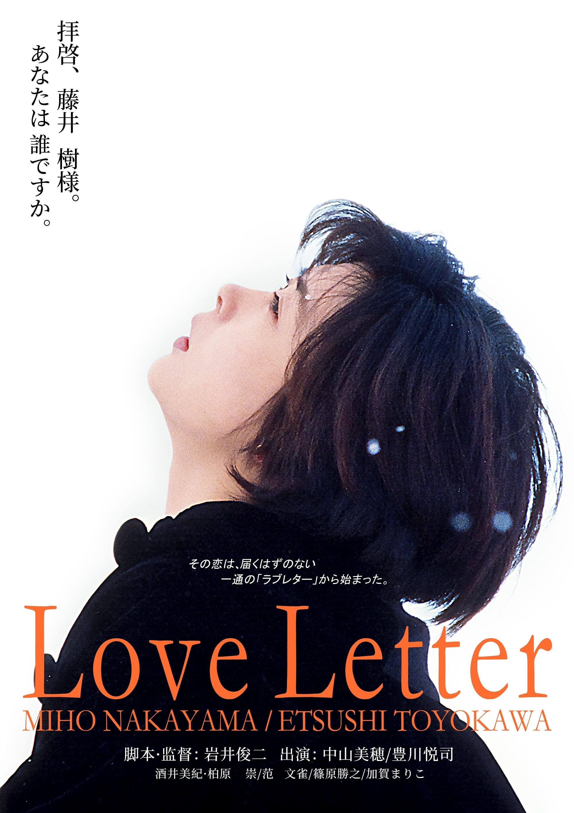
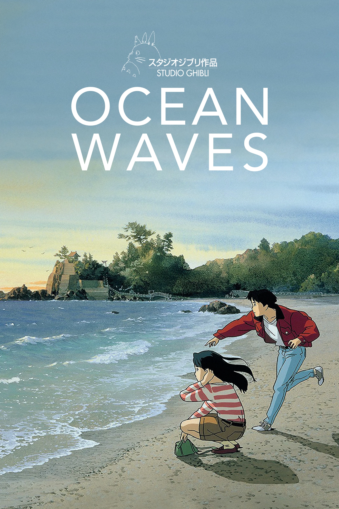
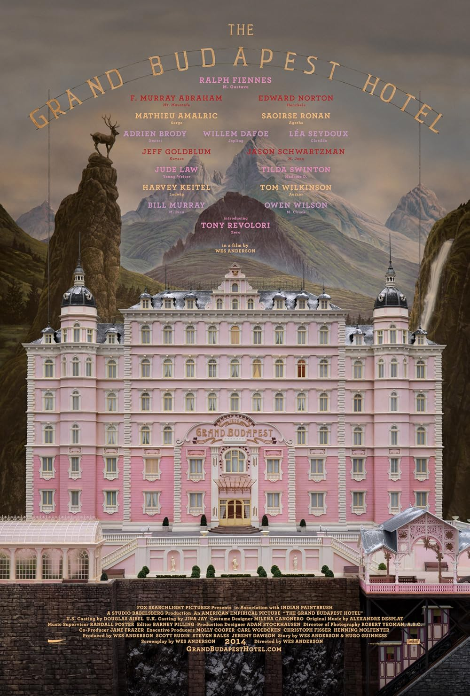

This list is not based on objective greatness. It is simply a personal ranking of films that have stayed with me for a long time, whether because of their atmosphere, their visual style, or the specific emotion they leave behind after the final scene.

Love Letter
Love Letter is the most delicate film on this list. What I love most about it is the way it turns memory, loss, and affection into something almost weightless, as if the whole story were drifting through winter air. The pacing is gentle, the emotions are restrained, and yet every small detail feels deeply sincere. It is the kind of movie that grows stronger after it ends, because the quietness of its scenes keeps echoing in your mind.

Ocean Waves
Ocean Waves feels personal in a very different way. It does not rely on dramatic twists; instead, it captures the awkwardness, confusion, and emotional distance of youth with surprising honesty. I like how ordinary it feels. The characters are not idealized, the relationships are messy, and the mood carries the soft melancholy of looking back on a season of life that was never fully understood when it was happening.

The Grand Budapest Hotel
The Grand Budapest Hotel earns its place because it is endlessly enjoyable to revisit. Every frame is carefully composed, every color feels chosen with intention, and the film balances elegance with humor in a way that is instantly recognizable. Beneath the playful surface, there is also a sense of nostalgia for a world that has already disappeared, which gives the movie more emotional depth than its bright, charming exterior first suggests.
If I had to summarize this list in one sentence, it would be this: I am most drawn to movies that create a strong atmosphere and leave room for feeling, reflection, and memory.